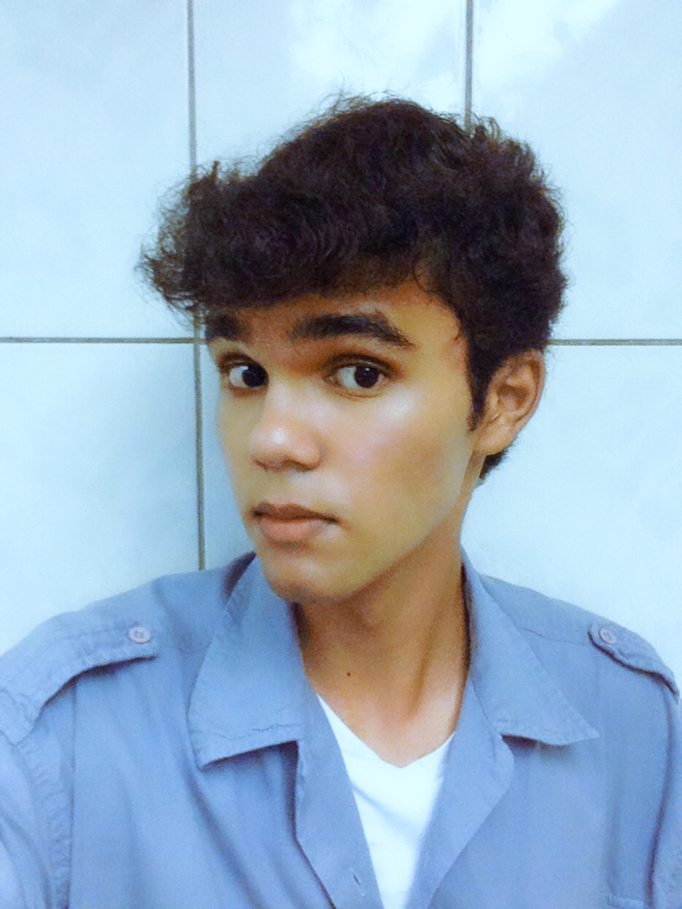

This is my first paragraph of my first website made by me from scratch. I wonder how it will turn out?

Cirriculum Vitae
Schools
- Wim Bos Verschuur School 2013-2017
- Scholengemeeschap Kwatta VWO/HAVO 2017-now
Experiences
- 2013-now Interaction with advanced (modern) technology, a smartphone with Android Software & personal computer/laptop with a Windows OS
- 2019-now Professional Phone Photography
- 2019-2019 A 3 week experience as a Service Station Pump Attendant
- 2020-now Advanced Professional Phone Photography
- 2020-2020 A 3 months experience as an all-rounder at a Coffee Shop
- 2020-now Interaction with Linux OS, specifically Kali Linux Ethical Hacking OS & Pop!_OS Ubuntu based OS
- 2020-now Full Stack Web Developer learning patch (currently studying HTML 5, CSS & Javascript
- 2021-now Python learning Path